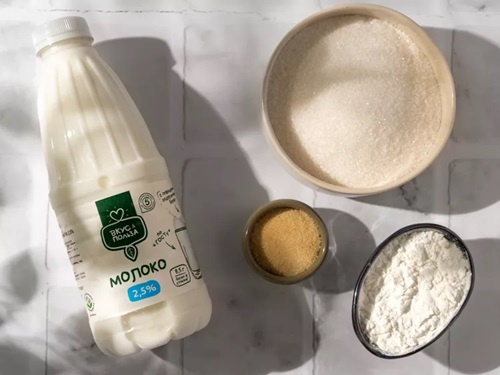
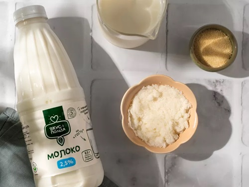
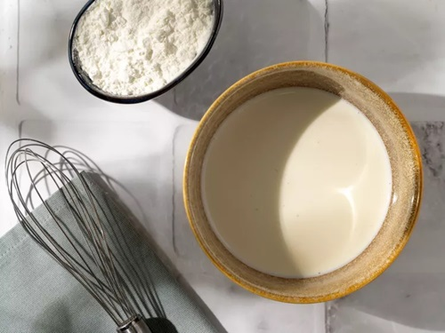
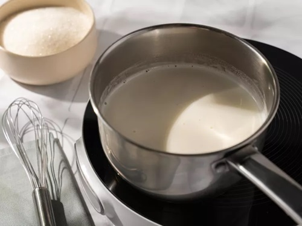
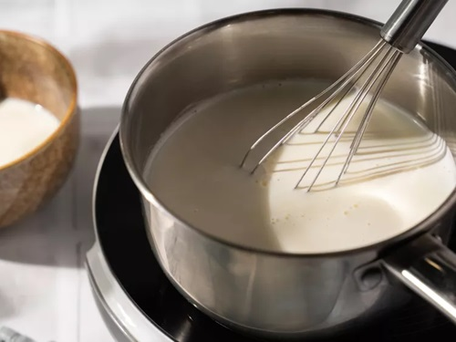
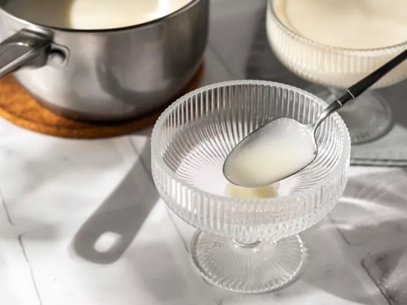
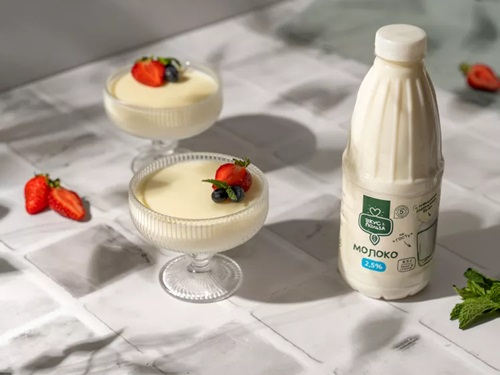

|
|
супы салаты гарниры десерты мои рецепты |
БланманжеДля этого десерта важен цвет продуктов. По традиции его готовили из белых ингредиентов (blanc manger переводится с французского как «белая еда»). Вскипятите молоко с сахаром до его полного растворения, соедините с крахмалом и желатином. Разлейте по креманкам и дождитесь полного застывания. Украсьте десерт ягодами, фруктами, орехами или шоколадом. Ингредиенты
ПриготовлениеПодготовкаПодготовьте миски, сотейник и порционные креманки. Шаг 1Налейте 50 мл молока в маленькую миску. Всыпьте желатин, перемешайте и оставьте на 10–15 минут. Шаг 2Налейте 150 мл молока в миску побольше. Добавьте крахмал и перемешайте, разбивая все комочки. Шаг 3Наполните сотейник оставшимся молоком. Всыпьте к нему сахар и поставьте на средний огонь. Помешивая, доведите смесь до первых признаков кипения. Шаг 4Влейте в кипящее молоко разведенный крахмал. Перемешайте и прогрейте около 3–5 минут, пока масса не начнет густеть. Шаг 5Добавьте желатин. Хорошо перемешайте и снимите сотейник с огня. Разлейте массу по креманкам и дайте остыть до комнатной температуры. Поставьте креманки в холодильник на 6–8 часов. ПодачаУкрасьте бланманже ягодами и мятой. |
Наверх |
| © рецепты без лишних слов |